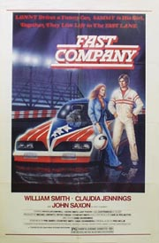

David Cronenberg
1979
91 minutes
This is a David Cronenberg film about drag racing.
You know going in that at some point someone is going to fuck a car.
You know that the cars are going to be fueled in some horrifying, Canadian body horror way. The cars will run on a milky-looking kerosene fuel mixture which will come in bags and will be injected into the fleshy, yonic fuel tanks of the cars with some sort of phallic appendage as the engines purr and gurgle appreciatively. To make things even more horrifying, all velocities will be measured in kilometers per hour.
You know the drivers will somehow become fused with the cars until one is indistinguishable from the other, car and driver as one scarred, wounded beast.
There isn't going to be any visit to Daytona in this film. The race tracks will all be in the snowy wastes of Quebec. Aside from featuring James Spader in his first starring role as The Driver, all the principal actors will be unattractive middle-aged men in lab coats who are charged with mopping up the discharges from the car before the Virus spreads to other engines and drivers. If you're lucky he may stunt-cast some pornographic actress from the era, who serves as eye candy until she is bio-engineered into becoming the car that James Spader fucks.
Buckle in (with your veiny tentacle-like seatbelt), you're gonna be in for a wild ride with this one. When you're all done, go shower and come back to pick your next film.
Time to choose something different: